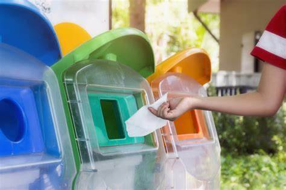
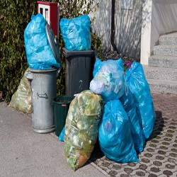
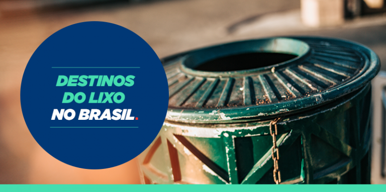

COMO FAZER A COLETA SELETIVA E RECICLAGEM DO LIXO DOMICILIAR

Coleta de lixo domiciliar é o ato de retirar resíduos de uma residência, sejam eles orgânicos ou não. Tal coleta é feita com o auxílio de caminhões que passam em dias e horários alternados. A equipe conta com um motorista e coletores.
Cabe salientar que cada cidade possui uma frequência de dias e horários. Sendo assim, sugere-se que o lixo seja colocado no local com poucas horas de antecedência. O objetivo é que animais não espalhem os resíduos pelo chão e atraia roedores.
Para tanto, observe a seguir algumas orientações:
Deixe o lixo em locais altos para que animais não o rasguem;
Mantenha os cães longe do alcance dos garis para evitar acidentes;
Caso haja vidro ou objetos pontiagudos em seu lixo, embrulhe com jornal.
Embora não seja muito difundida, a separação apropriada do lixo e a reciclagem de determinados resíduos vêm ganhando destaque na vida dos cidadãos e empresas. A coleta seletiva é a forma mais eficaz para descartar o lixo, visto que evita a poluição do meio ambiente.
Nessa perspectiva, uma vez que a coleta seletiva seja feita, os produtos são utilizados no processo de reciclagem. O processo de reciclagem consiste em reaproveitar os resíduos para fabricar outras coisas. Sendo assim, garrafas pet e papel, por exemplo, são reaproveitados.
Portanto, coleta seletiva é o ato de distribuir os resíduos em seus respectivos contentores. Reciclagem é o processo de modificação das matérias-primas para que sejam reaproveitadas.
Os detritos são distribuídos conforme a cor, a saber:
Amarelo – metais;
Azul – papeis e papelão;
Cinza – resíduos não recicláveis;
Marrom – resíduos orgânicos;
Preto – madeiras;
Verde – vidros;
Vermelho – plástico.
COMO DIMINUIR A QUANTIDADE DE LIXO DOMICILIAR?

Há algumas maneiras de diminuir a quantidade de lixo domiciliar de forma simples e eficientes são elas:
● Planeje suas compras antes de ir para o mercado, isso fará uma enorme diferença contra o desperdicio.
● Evite imprimir documentos em papel isso ajudará a não consumir tanto papeis e quando for imprimir usa os dois lados da folha.
● Use somente sácolas retornáveis para carregar as suas compras, tente evitar ao máximo as sacolas plásticas.
● Reutilize as embalagens que possam ser reutilizadas da forma como você acha melhor. Personalize, armazene.
● Faça sempre a coleta seletiva isso ajudará significavelmente.
● Se puder crie uma compostagem com os restos de alimentos orgânicos.
● Opte pelas embalagens retornáveis.
● Opte pelos produtos sustentáveis.
● Dê preferência a leituras digitais.
QUAL O DESTINO DO LIXO DOMICILIAR

Com o crescimento populacional no Brasil nas últimas décadas, principalmente nos grandes centros urbanos, o destino do lixo tornou-se um grande problema ambiental e de saúde pública. Existem formas corretas e incorretas de tratamento do lixo orgânico e material como: os lixões, aterros sanitarios, compostagem, coleta seletiva e reciclagem, incineração de lixo, tratamentos especiais.
É sabido que residências no geral produzem uma quantidade significativa de resíduo, como óleo, itens de higiene pessoal e fezes de animais, por exemplo. Com isso, algumas cidades contam com programas de coleta voltados para o lixo residencial, seja ele orgânico ou inorgânico. Para esses casos, a separação deve ser feita conforme a origem dos resíduos.
Cabe mencionar que os resíduos compostos por restos de alimentos devem ser separados do restante, como vidros e papéis. Dessa forma, as empresas destinarão os produtos à reciclagem ou empresas responsáveis por tal processo.
Quanto às cidades que não possuem programas de coleta seletiva, órgãos públicos contam com veículos destinados para a coleta do lixo.
Yngrid dos Santos
.jpg)